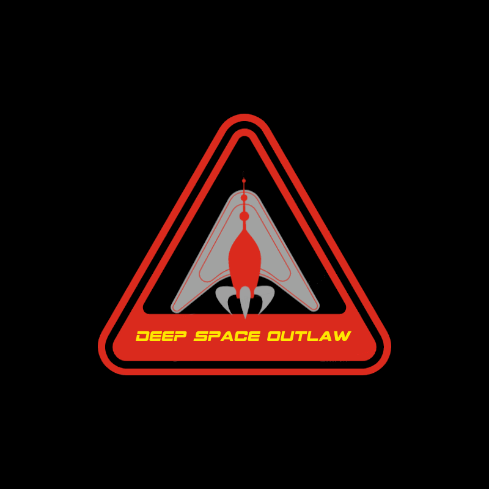
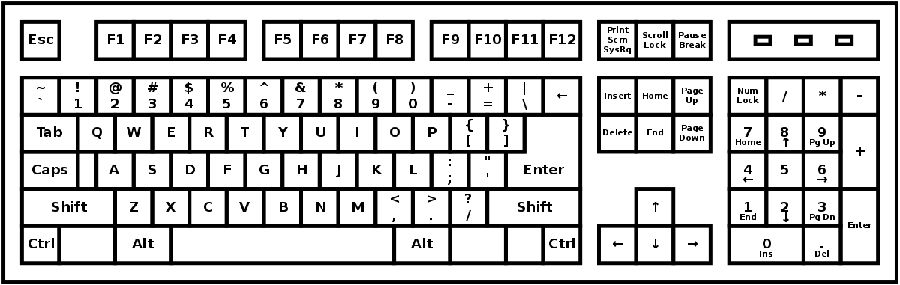
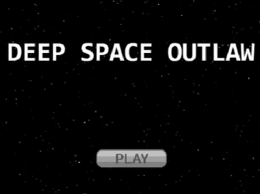
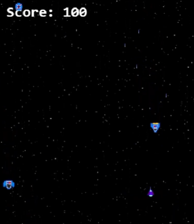

Overview
Deep Space Outlaw is an endless 2D top-down shooter set in deep space. Being wanted for many serious crimes,
the player has no other option but to take down as many law enforcement ships as possible before they get
taken down themselves.


Controls
The player moves their ship with WASD and uses the
Space Bar to shoot projectiles. All buttons in the
game are activated via mouse clicks.
Gameplay
Up 2 players can play at once in local co-op, where both players use the keyboard. Player 1 uses the W, A, S, D keys to move and Spacebar to attack in the direction they are facing.
Player 2 uses the Arrow keys on the NumPad to move and 0 on the NumPad to attack. As the player(s) progress through the spaceGame the enemy and boss ships on the screen will start to appear more frequently, therefore the player(s) is only required to judge the timing of their shots in front of the respawning ships.
If the player(s) misjudges the timing of their shot or crashes into the enemy after three lives, there ship will be destroyed. The player(s) will have to start from the beginning if after three lives have been lost.
To win the spaceGame you must defeat the Romulan Republican Force enemies and get Mr Spock safely to Romulus to broker the peace treaty between the Federation and the Romulan Empire!


Art and Visual Design
The art of Deep Space Outlaw is inspired by famous
space-themed games of the past such as Galaga and Space Invaders.
Art and Visual Design
This spaceGame has been developed using JavaScript with the Phaser 3 spaceGame framework. This allows spaceGame mechanics and features to be implemented into a website generated with HTML and CSS.
As such the JetBrains Webstorm development environment was used to bring these systems together, providing an efficient workflow for implementing the spaceGame foundations and structure.